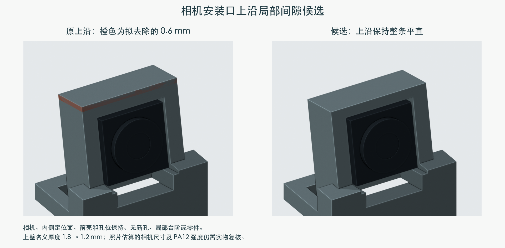
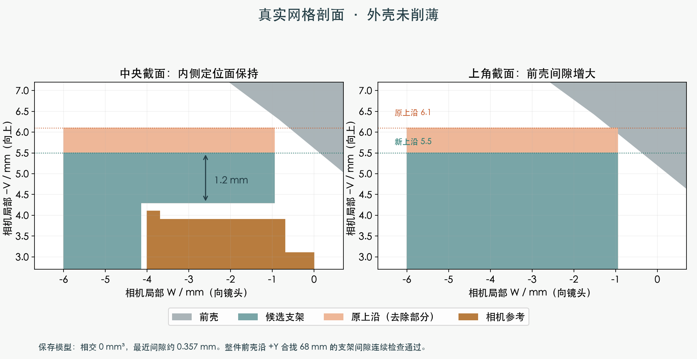

MORI M1.47 · 独立候选 · 未应用主模型
相机支架上沿，保持平直并留出间隙
上沿整条降低 0.6 mm，相机位置和内侧定位面保持。上壁名义厚度从 1.8 → 1.2 mm；没有新增局部台阶、孔或零件。

橙色表示拟去除的上沿。相机与外壳保持原位。

模型间隙约 0.357 mm；外壳未削薄。
检查结果
- 闭合单实体；其他 208 件的网格和位置保持。
- 上壁 20 个样本约 1.2 mm；相机六个方向仍受原结构限位。
- 光学框架、相机和前壳：141 / 49 / 137 个装入位置通过。
- 前壳与这处支架的 68 mm 合拢路径，8 个连续区间通过。
这是名义几何结果。相机照片估算细部、PA12 壁强度和实际配合仍需到货验证；其他线束与传动问题仍保留。
待确认
是否接受将这条上沿降低 0.6 mm、保留 1.2 mm 名义上壁？按此前结构变化先确认的要求，本候选尚未写入主模型。